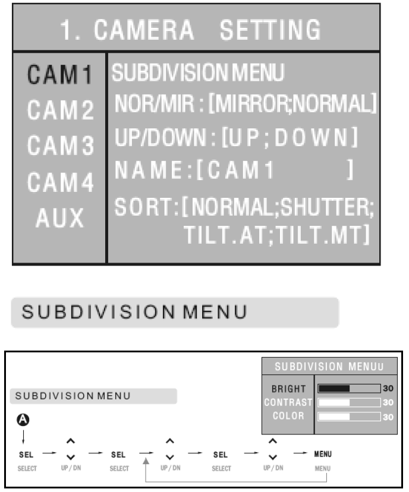
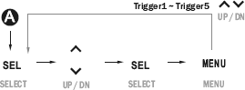
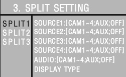
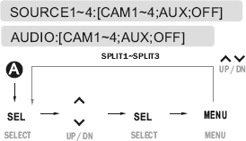
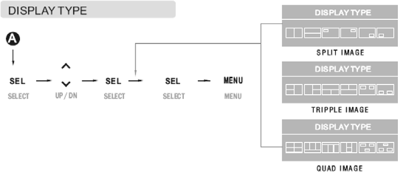
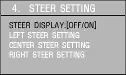
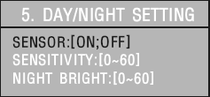
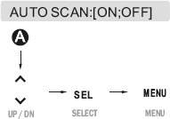
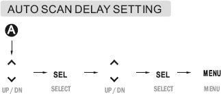

Enter the Main menu by touching Menu more than 2 seconds.
At this time, the menu selection OSD menu will disappear, if no touch is made within 7 seconds.
Camera Setting

Brightness, contrast, and color of each camera channel can be adjusted,
using the sub-menu.
The left and right side image of CAM1 ~ CAM4 and AUX can be exchanged.
The image of CAM1 ~ CAM4 and AUX can be inversed.
Each monitor can be named, and the image of the selected camera can be
displayed on the monitor, using the OSD.
Various cameras can be selected.
Setting a tilt manually: Select “TILT.MT.”
Exit from the menu and press the Menu key twice to display the following
OSD.
TILT CONTROL:
▲: Tilts up.
▼: Tilts down.
Trigger Setting
Users can use 5 triggers and select each camera trigger (CAM1~4; AUX;
SPLIT1~3; SKIP).
When the trigger signal is activated, the image of the selected camera
wil be displayed on the screen.
The trigger delay time can be adjusted between 0 and 20 seconds.
To prevent the image from being affected by the flickering signal (e.g., turn signals) of one camera, the trigger delay should be adjusted.

If “MARKER” is set to “OFF,” the parking support mark will not be
displayed, even though the reverse gear is engaged.
Split Setting


By default, SPLIT1 provides two split images, SPLIT2 provides three split images, and SPLIT3 provides four split images. However, SPLIT1 ~ SPLIT3 can be changed according to the number of selected cameras.
e.g.) When SPLIT1 is selected, two, three, or four split images can be displayed, depending on the number of selected cameras.
The selected camera cannot be selected by another source.
The audio is supported by the channel that selects an audio function only.

The screen will automatically return to the default split status after two, three, and four split screens, if the number of cameras is changed according to the number of selected cameras.
The screen is changed to the two, three, and four split screens according to the number of the cameras.
Steering Setting

Select "ON" to display the steering angle.
Select "OFF" not to display the steering angle.
If the menu is clicked after turning the handle of the vehicle all the
way to the right, the current wheel shapes will flash four times and the
position value of the wheels will be set.
If the menu is clicked after turning the handle of the vehicle all the way to the right, the current wheel shapes will flash four times and the position value of the wheels will be set.
If the menu is clicked after turning the handle of the vehicle to the centre, the current wheel shapes will flash four times and the position value of the wheels will be set.
Setting the steering wheel (example)
Select the menu and turn the steering angle all the way to the left and
press LEFT STEER SETTING.
Select the menu and turn the steering angle to the centre and press
CENTRE STEER SETTING.
Select the menu and turn the steering angle all the way to the right and
press RIGHT STEER SETTING.
The STEER DISPLAY item value will be changed from "OFF" to "ON." (Item
order - 1, 2, 3, 4, is irrelevant.)
The steering angle image will be displayed on the right upper side, if
the menu is closed.
The menu display time will be changed from 7 seconds to 20
seconds for the selected menu only.
Only the left and right side steering angle image will be turned
to red after setting, and the image will flash.
The steering image is displayed in 9 phases in total. As the
image is updated every second, images may not be displayed
smoothly, if the handle is turned quickly.
Day/Night Setting

Select "ON" to activate the function.
Select "OFF" to deactivate the function.
Shows the sensitivity setting value of the Day/Night detection sensor.
Users can adjust sensitivity and night brightness of the Day/Night mode.
Auto Scan Setting

Select "ON" to activate the function.
Select "OFF" to deactivate the function.

Each channel will be displayed continuously according to the time
interval set in “AUTO SCAN DELAY SETTING."
Press the “SELECT” key to select the intended channel.
Input "0" for “AUTO SCAN DELAY TIME” to skip the channel.
ADVANCED MENU
Auto Setting: The monitor will keep the last setting value.
The monitor will be turned on in the Power-on or Stand- by mode, depending on the status before turning the engine off.
"OFF" Setting: As the monitor keeps the "Stand- by" status regardless of the status before turning the engine off, the power switch should be touched to turn on the monitor.
"ON" setting: The monitor will be automatically turned on when the engine is turned on, regardless of the status before turning the engine off.